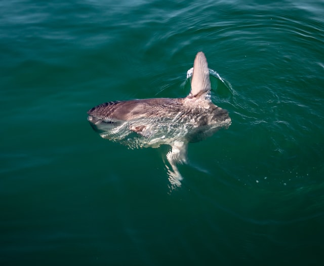

The sunfish is a sea fish that lives by eating jellyfish and squid. The sunfish are distributed in the oceans of temperate and tropical waters and appear on the entire coast of the Korean Peninsula. 
The body is very large, flat, wide, has no ventral fins, has small eyes and gills, and has very large and unique dorsal fins and tail fins. The mouth is very hard in the shape of a bird's beak. Its body is flat, so I can lie down and swim.